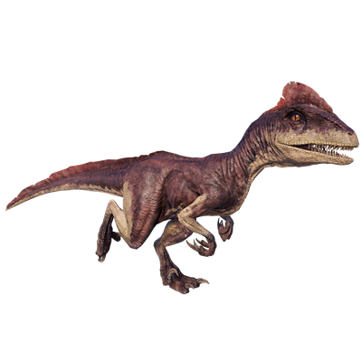

Useful Website
Deinonychus is a genus of theropod that existed around 110m years ago during the Early Cretaceous period. Its name translates to ‘terrible claw’, a reference to the long, scything talon on the second toe of its hind feet, which Deinonychus uses to defend itself from predators and attack its prey. Deinonychus is a close relative of Velociraptor and can grow up to 3m in length.
